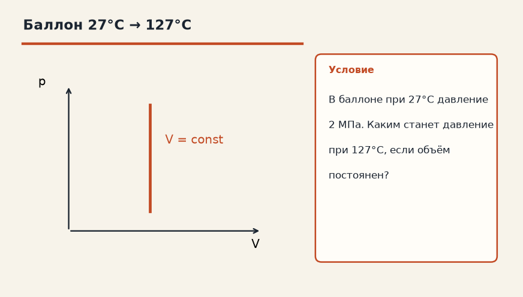
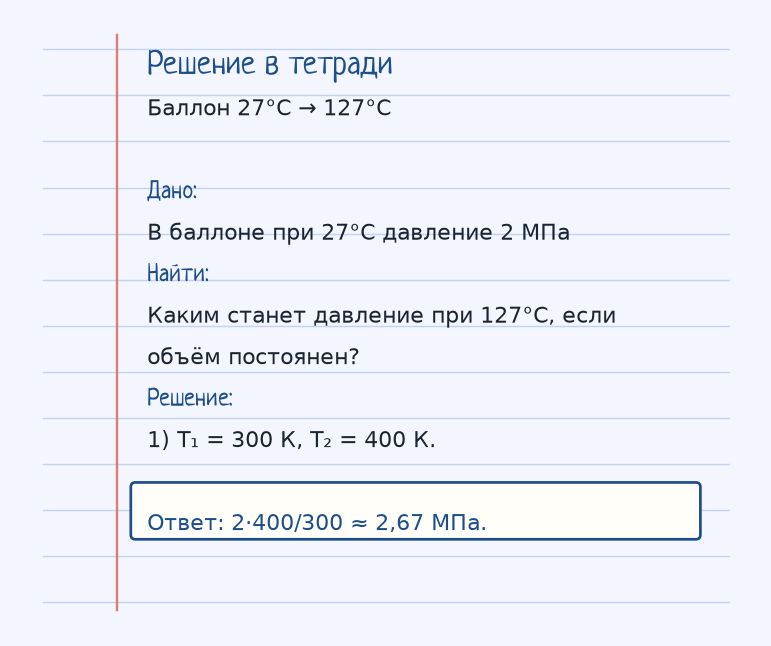
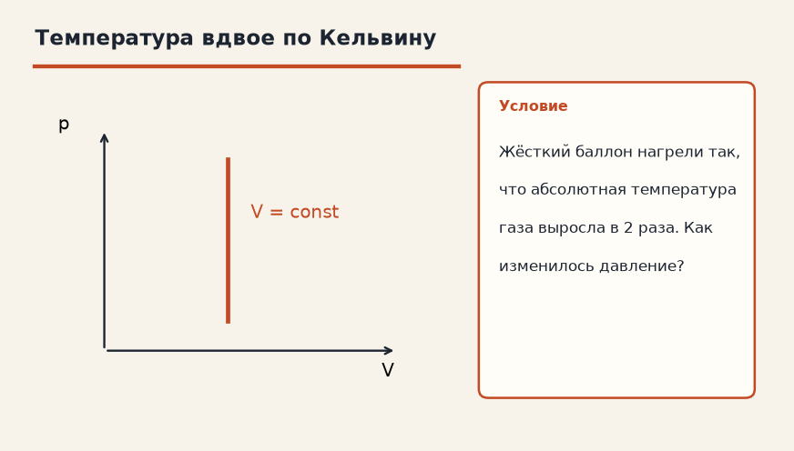
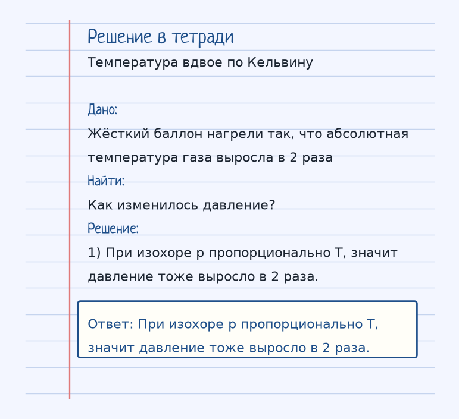

Тема «Закон Шарля (Изохора)»: физический смысл, единицы величин, типичные ошибки и два разобранных примера.

Схема к условию.
Физический смысл
При постоянном объеме (V = const) давление газа прямо пропорционально абсолютной температуре.
Изохора: объём закрытого баллона не меняется, газа не выпускают. Тогда давление пропорционально абсолютной температуре, p/T = const. Нагрел баллон — давление выросло, охладил — упало.
Снова только кельвины. В задаче карточки 27°C — это 300 К, 127°C — это 400 К. Давление было 2 МПа, стало 2·400/300 ≈ 2,67 МПа. Если бы кто-то поделил 127 на 27, получилась бы другая физика, не из этой карточки.
Закрытая бутылка на солнце — бытовая изохора: объём воздуха внутри почти тот же, а давление растёт, пока пробка не вылетит.
Формула и единицы
p / T = const
p/T = const при V = const. T в кельвинах.
Пояснение
Закрытая бутылка с водой на солнце нагревается, давление внутри растет — пробка может выстрелить.
Закрытая бутылка на солнце: воздух не выходит, объём тот же, давление растёт, пробка может выстрелить.
Типичные ошибки
27°C — это не 27 К. Перед отношением T₂/T₁ переведи оба значения: +273.
Разобранные примеры. Решение каждого открывается отдельно.
Разбор 1
Баллон 27°C → 127°C
В баллоне при 27°C давление 2 МПа. Каким станет давление при 127°C, если объём постоянен?
На схеме только условие.
Порядок записи: данные, единицы СИ, искомая величина, ход решения, ответ.
Дано. В баллоне при 27°C давление 2 МПа
В СИ.
Найти. Каким станет давление при 127°C, если объём постоянен?
Решение.
T₁ = 300 К, T₂ = 400 К.
2·400/300 ≈ 2,67 МПа.

Разбор 2
Температура вдвое по Кельвину
Жёсткий баллон нагрели так, что абсолютная температура газа выросла в 2 раза. Как изменилось давление?

На схеме только условие.
Порядок записи: данные, единицы СИ, искомая величина, ход решения, ответ.
Дано. Жёсткий баллон нагрели так, что абсолютная температура газа выросла в 2 раза
В СИ.
Найти. Как изменилось давление?
Решение.
При изохоре p пропорционально T, значит давление тоже выросло в 2 раза.
При изохоре p пропорционально T, значит давление тоже выросло в 2 раза.

Разбор 3
Жёсткий баллон
В закрытом баллоне постоянного объёма газ нагрели от 200 К до 250 К. Во сколько раз выросло давление?
На схеме только условие.
Порядок записи: данные, единицы СИ, искомая величина, ход решения, ответ.
Дано. T₁ = 200 К, T₂ = 250 К, V = const
В СИ.
p/T = const.
Найти. p₂/p₁
Решение.
250/200 = 1,25.
В 1,25 раза.
Разбор 4
Минус 23
Переведите −23 °C в кельвины и скажите, во сколько раз выросло бы давление при нагреве до 250 К в том же объёме, если начать с −23 °C.
На схеме только условие.
Порядок записи: данные, единицы СИ, искомая величина, ход решения, ответ.
Дано. t = −23 °C, T₂ = 250 К, V = const
В СИ.
−23 + 273 = 250 К.
Найти. Отношение
Решение.
Начальная температура уже 250 К, отношение равно 1.
250 К; давление не изменилось бы, если конечная температура тоже 250 К.
Разбор 5
До 500 К
Изохорный нагрев от 250 К до 500 К. Как изменилось давление?
На схеме только условие.
Порядок записи: данные, единицы СИ, искомая величина, ход решения, ответ.
Дано. T₂ = 2 T₁, V = const
В СИ.
p пропорционально T.
Найти. p
Решение.
Давление выросло в 2 раза.
Выросло в 2 раза.
Разбор 6
Имя
Как называется процесс при постоянном объёме?
На схеме только условие.
Порядок записи: данные, единицы СИ, искомая величина, ход решения, ответ.
Дано. V = const
В СИ.
Школьное название.
Найти. Название
Решение.
Это изохорный процесс.
Изохорный.
Разбор 7
Цельсий в пропорции
Почему в p/T нельзя подставлять градусы Цельсия?
На схеме только условие.
Порядок записи: данные, единицы СИ, искомая величина, ход решения, ответ.
Дано. Формула Шарля
В СИ.
Ноль Цельсия не является нулём давления.
Найти. Причина
Решение.
Пропорциональность записана для абсолютной температуры.